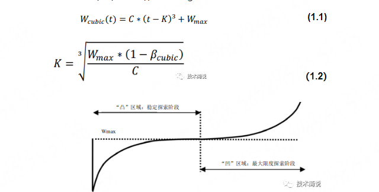

从骨干网到 BBR：我的 Homelab 香港反代服务器选购与调优实战
为我的 homelab 玩具挑选线路，挑选 CSP 购买 HK 服务器，并且进行评测，最终深入 TCP 拥塞控制原理，对拥塞控制协议和接受窗口进行调优。
为什么是 HK
需求
我的 Homelab 运行着一套杂糅了生产力与数字娱乐多种需求，我需要一个反代服务器来让我随时随地访问。服务器需要满足基础的一些反代需求，外部 ssh 访问家里服务器；随时随地访问 Web 网站服务，查看服务状态、任务执行情况和服务监控，保证延迟不能太高，稳定性不能太差。同时需求也涵盖了文件管理（vsftp）、离线下载（qbit + wireguard 隧道）等高带宽需求。同时也需要通过域名访问，方便又有面子。无需流媒体解锁。
现状：大陆宽带与云服务器的“围城”
在国内折腾本地服务器，避不开两个极端：
- 家庭宽带的阉割： 绝大多数地区不再分发公网 IPv4，即便有公网 IP，80/443 端口也处于永久封禁状态。本来还有一个 300M IPv4 家庭宽带，但是去年 24 年就已经没有公网 IP 了。
- 国内云服务器的“带宽税”： 大陆云厂商提供的固定 IP 服务器，带宽价格极度畸形。3M、5M 的带宽在今天这种动辄几百兆的互联网环境下看个网页都费劲，而想要升级到百兆带宽，月费往往高过服务器硬件成本数倍，价格堪比房租。
为什么是香港（HK）？
香港服务器是平衡合规性、成本与性能的最佳交汇点。
- 免备案（ICP）： 这是最直接的动力。域名绑定香港 IP 无需繁琐的备案流程，即买即用，保护隐私的同时节省了巨大的时间成本，之前本科做过备案需要来来回回折腾两周才能办下来。
- 带宽性价比： 相比大陆动辄几千块的百兆带宽，香港服务器通常提供更大的共享或独享带宽，且对国际方向的吞吐量极佳。
- 地理与路由优势： 物理距离极近，路由优化好的情况下，延迟可控制在 10ms-40ms，体感上与国内机房无异。
挑选反代服务器
网络线路
香港的网络线路环境复杂，价格差异的核心不在于硬件，而在于其**回国路由（Return Path）**的质量。以下是按性能和稳定性划分的五个等级：
Level 1：纯国际 BGP (NTT / PCCW / Cogent)
这是最基础的线路，通常被称为“国际大水管”。
- 技术定义： 流量通过国际互联网交换中心传输，未经过中国运营商的定向加权优化。
- 特点： 带宽极大（通常 1Gbps 起步），价格极低（月付 20 元左右）。
- 痛点： 虽名为“直连”，但由于未缴纳回国“过路费”，晚高峰流量往往绕行日本、新加坡甚至美国。丢包率极高，最高可达 20%-50%。
- 适用： 纯海外业务或作为落地机（配合中转隧道）。
Level 2：中国移动回程优化 (CMI)
CMI (China Mobile International) 是目前香港大带宽 VPS 的主流。
- 技术定义： 移动自建的直连链路。由于移动国际带宽资源丰富，目前是性价比之王。
- 特点： 移动用户访问体验极佳，延迟可稳在 30ms-40ms。
- 现状： 2025 年以来，随着电信和联通扩容，部分优质 CMI 线路也会针对电联用户进行 BGP 动态优化，是 Homelab 跑大流量（qbit/本地备份）的首选。
- 典型厂商： 阿里云/腾讯云轻量、ClawCloud（SG/JP）、Uqidc。
Level 3：联通双程直连 (AS4837)
联通的普通回程直连线路。
- 技术定义： 对应电信的 163（AS4134）。虽然定义上是普通线路，但由于联通出国总带宽冗余度高，其负载远轻于电信 163。
- 特点： 延迟虽略高于 Level 4，但稳定性优于纯 BGP。在非晚高峰时段，体感与精品网差距不大。
- 适用： 预算有限且对延迟有一定要求（如远程开发、网页反代）的联通用户。
Level 4：精品优化专线 (CN2 GIA / AS9929)
这是公网环境下的“天花板”，通常采用双程或三网直连。
- CN2 GIA (AS4809)： 电信旗舰级线路。拥有独立回国链路，支持多路径负载均衡，即使全网拥堵，它也能通过独占通道保证低延迟。
- AS9929 (CU Premium)： 联通精品网，前身是老网通骨干网。其特点是极度冷门、负载极低，在很多极客眼中，其稳定性甚至超过 CN2 GIA。
- 适用： 对延迟极度敏感的业务（如 SSH 远程办公、实时监控、Home Assistant 触控面板）。
- 典型厂商： DMIT (Pro 系列)、HostYun (部分套餐)。
Level 5：物理隔离专线 (IPLC / IEPL)
如果你需要彻底无视“防火墙”波动或追求极致的毫秒级竞争优势，这是终极方案。
- 技术定义： IPLC（国际私有租用线路）或 IEPL（国际以太网专线）。它们是在物理层实现的端到端对接。
- 优势： 不经过公网 GFW，不存在断流或特征识别封锁问题。延迟仅取决于光速在光纤中的物理传输损耗（如深港 2-5ms）。
- 代价： 价格极高且通常按流量计费，主要由专业中转商提供。
我的最终云厂商选择
基于我的需求，我准备购入一个纯国际 BGP，用于多层协议搭建隧道来做种，或者开着代理连反代 + 开着代理下载；同时做备用 IP。只需要一个 L2~L3 的回国的线路。
本来想买 AI 推荐的 clawcloud，SG/JP，70 CNY/mo，千兆 CMI；奈何 uqidc 太便宜，我这里家庭网络也是千兆移动，线买来一台 HK CMI 试试水，一个月只要 25 CNY。具体其他的选择参见附录。
另外购置阿里云首选 99 计划的 99 CNY/year ECS，3 Mbps 的上海机器，用于游戏反代和备用链路，续费不涨价，价格长期稳定。不选择 腾讯云轻量应用服务器（同 99 CNY/year） 主要原因就是限购，续费会非常麻烦。
网络性能评测
拿到之后之后，先安装 docker、配置登录，之后先跑个分再用，这里拿距离我非常近的 ali 云来做比较。
ping
HK 服务器晚上高峰期大概能抖动到 45，日常非常稳定的 35~35。之前测了一天，丢包测的是大概 0.07% 附近，这里抖动下就丢了不少。
1 | --- hk ping statistics --- |
ali 上海机房则是非常稳定 10~12，本地的机房几乎不丢包不抖动，只是用来玩游戏。
1 | --- ali_ip ping statistics --- |
nettrace
hk 这个服务器确实是 CMI 线路：
1 | mtr -rw hk |
ali 也有很多跳，大部分是 ali 的内网环境。
1 | sudo nexttrace aliip |
iperf3
服务端安装 apt install iperf3 -y，并且开启服务：iperf3 -s。本地安装 sudo pacman -S iperf3，然后测速 iperf3 -c 服务器IP；iperf3 -c 服务器IP -R。TCP 得到出站带宽约为 100M 附近，入站则在 400M 以上。这里发现 wsl 桥接模式下网络测速不是很稳定，这里使用一个 8745HS、32 GB、Debian 13 的物理机。
1 | # 入站 |
想进一步跑满 udp 可能更方便：
1 | iperf3 -c hk -u -b 1000M -l 1450 |
测试 Ali 也是类似，客户端上传服务器的入站带宽为 100M，但是服务器向客户端分发的出站带宽限制在 3Mbps，可能有令牌桶允许短暂 2 倍超额。
1 | # 入站 |
流媒体解锁
虽然不用做看流媒体什么的，但是也侧面反映了 IP 状态，还是希望干净一些，执行 bash <(curl -L -s check.unlock.media)，看到 AI 大部分不能用，一般的流媒体出了 Spotify，都可以访问。
1 | ** 正在测试 IPv4 解锁情况 |
主机性能
这个是我最不关心的，只要稳定即可。全家桶直接运行：curl -sL yabs.sh | bash，里面甚至带一个 GeekBench，还能测测线路。
网络优化
注意到上面 UDP 可以跑满 1 Gbps 入站，但是 TCP 非常不稳定，带宽也比 UDP 更低，一部分原因是 TCP 本身的开销（例如 TCP 头更长），另一个非常大的原因就是 TCP 的拥塞控制。
拥塞窗口
要能跑慢速度，则需要路程中的数据能够塞得下到 TCP 的发送窗口（swnd）中，而 swnd 是取接收窗口（rwnd）和拥塞窗口（cwnd）最小值。彻底跑满窗口大小需要 45ms * 1000Mbps = 5.625 MB，考虑到这时候的延迟（尤其是中间路由器排队延迟），时延带宽积需要其实更大，上面 iperf 测速发送端也可以看到窗口大小的变化。
查看 rwnd：
1 | # or ss -ti |
虽然 core 的 rmem 都是 212KB，但是一般遵循 net.ipv4.tcp_rmem 自动调优的限制，最大 6MB。具体来说应用程序没有显式地在代码里调用 setsockopt() 来设置 SO_RCVBUF，内核就会接管；非 TCP 协议，例如 UDP 也会自动接管，但是 UDP 没有发送窗口的限制，并且不需要保持有序，因此能跑满千兆。
1 | net.core.rmem_default = 212992 |
那么不稳定的公网上问题就出在拥塞窗口和拥塞控制算法上了。
拥塞控制算法
学院派的 RENO
TCP Reno 是最经典的拥塞控制算法之一，也是我们课本上学到的协议，其核心在于通过 丢包 来感知网络拥塞。它主要由四个阶段组成：
- 慢启动 (Slow Start)：每经过一个 RTT，拥塞窗口 cwnd 翻倍，直到达到慢启动阈值 ssthresh（学的时候是 64KB，事实上初始是一个极大值）。
- **拥塞避免 (Congestion Avoidance)**cwnd 大于等于 ssthresh 后，每 RTT 窗口仅增加 1，呈线性增长。
- 快重传 (Fast Retransmit)：发送方收到 3 个冗余 ACK 时，无需等待超时即判定丢包。
- 快恢复 (Fast Recovery)：这是 Reno 的核心改进。丢包后，将 ssthresh 设为当前窗口的 1/2，并将 cwbd 设为新的 ssthresh（而非回归 1），随后进入 线性增长。
- 超时：当发生重传超时时，Reno 会认为网络发生了严重拥塞，ssthresh 直接减半；cwnd 则回归 1。RTO（超时重传时间）RENO 维护指数加权移动平均（EWMA）得到的 RTT 和方差，当出现超时时，RTO 不仅会基于这些值计算，还会执行指数退避（Exponential Backoff），即连续超时时将 RTO 翻倍。

其策略是通过线性增长不断去触碰探测网络带宽是否有增长、空余，但是一个稳定的带宽中，则会持续调整 cwnd，导致无法长时间维持满功率运行，基本上只能跑满 75%。一个存在不稳定丢包的网络中，则会实际更低。
现实派的 CUBIC
CUBIC 是目前 Linux 内核默认的拥塞控制算法，它主要是为了解决 Reno 在**长肥网络（LFN，即高带宽、高延迟）**中窗口增长太慢的问题。
Reno 的增长是线性的（每 RTT +1），在百兆甚至千兆光纤下，想恢复到丢包前的速度需要漫长的等待。CUBIC 将窗口增长函数改为关于时间的三次函数：
$$W(t) = C(t - K)^3 + W_{max}$$
- $W_{max}$：上次丢包时的窗口大小。
- $K$：预估恢复到 所需的时间。
$$K = \sqrt[3]{\frac{W_{max} \cdot \beta}{C}}$$
- $\beta$：乘性减小因子（CUBIC 默认约为 0.717）。
- $C$：缩放因子（经验参数，标准通常定为 0.4）。
其核心思想就是，在发生丢包时，窗口下降回退 $-CK^3$，然后在恢复到之前窗口大小的时候则是最平滑的一段曲线，会更多时候去维持接近满带宽的运行。

- 稳定性（凹函数阶段）：当窗口接近 $W_{max}$ 时，增长速度会迅速放缓。这种“小心翼翼”的探测能有效减少再次丢包的概率。
- 平台期（稳定阶段）：在 $W_{max}$ 附近，增长几乎停滞。这意味着 CUBIC 能长时间保持在最佳带宽利用率附近，而不是像 Reno 那样频繁上下震荡。
- 激进探测（凸函数阶段）：一旦跨过 $W_{max}$ 且没丢包，说明网络环境变好了，CUBIC 会迅速加速进入新一轮的带宽探测。
$K$ 带入 $W(t)$ 公式就可以得到，Reno 的减小银子 0.5，被进一步放大到了 0.7，因此：
- 乘性减小因子：约 0.7（Reno 是 0.5）。这意味着 CUBIC 丢包后只降低 30% 的窗口，回血更快。
- RTT 独立性：CUBIC 的增长主要取决于距离上次丢包的时间，而非 RTT。这解决了 Reno 协议下“短 RTT 连接会抢走长 RTT 连接带宽”的不公平问题。
未来已来的 BBR
虽然 CUBIC 已经非常优秀，但它本质上还是基于 丢包即拥塞（Loss-based）的逻辑。
BBR（Bottleneck Bandwidth and Round-trip propagation time）由 Google 提出，它改变了游戏规则：不再通过“撞墙（丢包）”来判断上限，而是通过主动测量来寻找平衡点。
BBR 解决了以下三个 CUBIC 无法处理的致命问题：
1. 缓冲区膨胀 (Bufferbloat)
这是 CUBIC 最头疼的问题。在现代网络设备中，路由器通常有很大的缓存。
- CUBIC 的盲点：即使带宽已满，只要路由器缓存没溢出，就不会丢包。CUBIC 会继续疯狂增加窗口，导致大量数据包堆积在路由器缓存中。
- 后果：虽然吞吐量很高，但 延迟 (Latency) 飞涨，打游戏、视频通话会感觉到明显的滞后。
- BBR 的解法：BBR 测量 最小 RTT，一旦发现 RTT 开始变大，它就知道缓存开始堆积了，于是主动减速，将延迟控制在极低水平。
2. 随机丢包的误判 (Random Loss)
在 WiFi 或 5G 网络中，丢包不一定是由于拥塞（可能是信号干扰、切换基站等导致）。
- CUBIC 的盲点：哪怕网络很空闲，只要发生 1% 的随机丢包，CUBIC 就会像惊弓之鸟一样直接将窗口减小 30%。
- BBR 的解法：BBR 不管有没有丢包，它只看实时交付速率。只要速率没降，它就认为网络没堵，不会轻易减速。这使得 BBR 在高丢包链路上的吞吐量能达到 CUBIC 的几十倍。
3. “长肥网络”的上限限制
在跨国光纤等高带宽、高延迟链路上，CUBIC 为了维持高吞吐，需要极低的丢包率。
- 一旦出现极小的波动，CUBIC 就需要很长时间才能爬回最高速度。
- BBR 能够始终贴着“瓶颈带宽”跑，不被丢包率干扰，极大地提升了传输效率。
BBR 维护带宽瓶颈和物理延迟，努力做到贴着带宽上限，贴着实验带宽积跑。BBR 协议在四个状态中流转：
- Startup： 指数级加速探测带宽（类似慢启动）。
- Drain： 排空 Startup 阶段造成的队列积压。
- ProbeBW (稳态)： 循环改变 Pacing Gain (1.25 -> 0.75 -> 1.0 …)，在“探测更高带宽”和“排空队列”之间反复横跳。
- ProbeRTT： 周期性地几乎停止发送，测量纯净的 RTprop。
BBR 历经三个版本 v1 到 v3 迭代，v1 有很强的抢占带宽能力，v2 则强调公平性，v3 则低延迟无卡顿。
安装配置 BBR
根据上面的原理，BBR 只需要 TCP 发送端安装就可以了，我们只需要主机、服务器都启用 BBR 即可。
1 | # 1. 开启 FQ 队列 |
这里安装的是 BBR v1，如果使用 v3 版本，则需要更换内核：
1 | # 1. 注册存储库 |
有一个问题就是 wsl2 内核默认不支持 bbr，后续可以尝试 编译内核。
1 | cat /proc/sys/net/ipv4/tcp_allowed_congestion_control |
BBR 性能测试
这里连接 hk 服务器重新测速：
1 | # 入站 |
性能从 入站 114 Mbps、出站 231 Mbps 变为当前入站 121 Mbps、出站 662 Mbps。
接收窗口调优
从入站的详情中可以看到，拥塞窗口从 500 KB 变成了 1000 KB；出站时候的拥塞窗口也从数百 KB 变成了 10 MB（服务端显示，文中没有给出）。但是注意到上面 TCP 接受窗口最大只有 6M，因此发送窗口也被限制死了最大 6 MB。这也是最终没有跑满千兆入站带宽的原因。可以手动调整本地机器的接受窗口：
1 | sudo tee /etc/sysctl.d/99-network-buffers.conf > /dev/null <<'EOF' |
重新测试得到：
1 | iperf3 -c hkip -R |
出站带宽直接跑到 900 Mbps。
丢包环境下的 BBR
如果想要测试 BBR 的丢包严重环境下的威力，需要人工引入丢包：
1 | # 3% 丢包 |
BBR 可以依然跑满 100 Mbps 的带宽：
1 | iperf3 -c hkip |
关闭 BBR 使用 CUBIC 则直接跌到 3 Mbps
1 | iperf3 -c hkip |
总结
这份详尽的评测记录了我为 Homelab 挑选“香港出口”的全过程。从线路等级的深水区分析，到多家云厂商的实测对比，最终选择了一家 25 元千兆 CMI 线路。经过实测，其 ping 可以稳定 35~45，可以达到出站带宽百兆水平，入站带宽千兆。最终通过对 TCP 拥塞控制算法的研究和最终的性能测试，BBR 改变了对丢包的定义，它不再把丢包看作拥塞的必然信号，而将其视为环境噪声。开启了 BBR 算法后，TCP 入站带宽从 200+ 使用 BBR 提升到了 600+，之后对接收窗口大小进行调优，跑到了 900+，非常接近带宽上限了。
后续的工作包含：
- 给我的服务器配置反代、配置域名和证书。
- 配置 SSO。
- 阅读 BBR 的原始论文。
附录：本次考虑的云厂商
AI 推荐
coalcloud：量大管饱国内 IP
coalcloud 也是 AI 偶然提到，打开发现是国内的大带宽服务器属实有点罕见，500~1000 CNY/月就能买到 4C4G 的国内IP，300M 共享带宽 + 10T 流量一般用户怎么都用不完；但是国内大水管，但是国内需备案，PASS

clawcloud：阿里云的精品 BGP 线路，高性价比
clawcloud 据说阿里云血缘，和阿里云 Premium BGP 同一个线路，非常稳定，包含 CN2 GIA/AS9929/CMI 等动态优化。
这个 JP / SG 的 2C2G 1Gbps 只要 10 usd / 月的真的是非常划算，使用 CMI。最可惜的是 HK 地区由于成本原因下架了，虽然位置更远，但是依然非常稳定。

根据 clawcloud免费容器测试 的结果，美西到国内要 100+ ms，同时有一些测试 IP：
新加坡 https://ap-southeast-1.run.claw.cloud/ 测试IP: 8.214.160.116
日本 https://ap-northeast-1.run.claw.cloud/ 测试IP: 8.216.77.106
德国 https://eu-central-1.run.claw.cloud/ 测试IP: 47.245.158.145
美国东部 https://us-east-1.run.claw.cloud/ 测试IP: 47.90.173.78
美国西部 https://us-west-1.run.claw.cloud/ 测试IP: 47.251.130.108
分别测试 新加坡、日本，直连网页体验非常流畅；尝试 ping 和 traceroute
1 | # sg |
- 第 1-3 跳 (内网段): 你的本地网关和 OpenWrt 路由器，延迟极低，表现完美。
- 第 4 跳 (100.75.0.1): 运营商的大内网 IP (CGNAT)，说明你可能没有公网 IPv4。
- 第 6-8 跳 (221.183…): 进入了 中国移动 (AS9808) 的国内骨干网。
- 第 10-12 跳 (223.120 / 223.119): 进入了 CMI (China Mobile International)，即移动的国际出口段。
- 第 13-14 跳 (as3491.net): 到达了 PCCW Global 的新加坡节点。
70 元买 SG 的优质 CMI 网络 1 Gbps 还是可以考虑的，看 评测 带宽直连也是可以直接跑满的。
akile：中规中矩的 HK CMI 线路
akile 是做小鸡的商家，如果不做活动价格竞争力非常一般，HK 100Mbps 原生 IP 的 CMI 要 114 CNY。看 相关评测 也是比较稳定。


dmit：超高带宽优质线路和高物价
dmit 适合极致带宽追求的土豪玩家：1 Gbps 1 TB 流量的 CN2 GIA，80 usd/mo；2Gbps 2TB 流量 CMI 线路，60 USD/mo


网络搜集的
HostYun：50 元档的 CN2 线路
hostyun 也是在帖子中看到的广告，有人说是 CN2 线路，50 元百兆 1 TB 流量。

uqidc：大带宽，超廉价 CMI / CN2
uqidc 确实价格便宜选择多样：CN2+9929+CMI 线路百兆 500 GB，只要 25 CNY；千兆 CMI 线路 500 GB 只要 25 CNY。看 评测 也还可以，这价格要什么自行车。


野草云：便宜百兆，给测试 IP
野草 听名字挺路边的，但是给测试 IP，价格 25 也算一般便宜，不过带宽线路都比较一般。

DogYun：小厂商也并不便宜
狗云 无意中翻到的小厂，50 Mbps （猜测 CMI）一个月 35 CNY；30 Mbps（猜测 CN2 GIA 级别）一个月 60，整体还是太贵

其他国际厂商
其他还有一些厂商例如 racknerd、vultr、搬瓦工 不怎么提供大陆优化线路的机器或者太贵，不予考虑。大厂价格太贵也不予考虑。